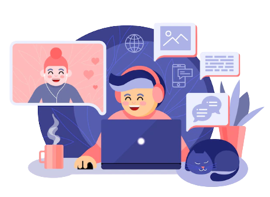

Sobre Mim
Objetivo
A mudança que você quer está na decisão que você toma
Uma química por formação tentando migrar para tecnologia!
Formação Acadêmica
Não pare! Até se orgulhar de você
- Curso Intensivo – Cosmetologia – Instituto Racine – Conclusão 2021
- Extensão Universitária em Gerenciamento de Projetos – Gestão da Qualidade pelo SENAC – Conclusão Maio/2020
- Graduação em Química na Universidade UNIFIEO – Ano de Conclusão 2015
- Técnico em secretariado no Instituto Técnico de Barueri – Ano de Conclusão 2011
Idiomas
Decida onde quer chegar e não pare até conseguir
- Inglês – Avançado
- Espanhol – Básico
- Coreano – Iniciante (curso em andamento)
- Intercâmbio de estudo e cultural – Canadá – Vanwest College (Mai/2019)
Experiência Profissional
Já experimentou acreditar em você? Tente! Você não faz ideia do que é capaz.
Alpargatas – (Abr/20 – Nov/20) – Empresa Multinacional Brasileira de Grande Porte.
- Analista de Gestão e Desenvolvimento de Fornecedores Pl
Henkel – (Jan/15 – Abr/20) - Empresa Multinacional Alemã de Grande Porte
- Estagiária de Qualidade (Jan/15 – Abr/16)
- Analista de Qualidade Jr. (Abr/16 - Jan/18)
- Analista de Qualidade Pl. (Fev/18 – Mai/19)
- Analista de Qualidade Sr. ( Jun/19 – Abr/20)
PIC Química e Farmacêutica LTDA – (Set/13 - Set/14) - Empresa nacional de pequeno porte, atuante no ramo de distribuição matérias-primas cosméticas, farmacêuticas, veterinárias e de produto de limpeza.
- Estagiária de Pesquisa e Desenvolvimento (Set/13 - Set/14)

Cursos
Sucesso é o acúmulo de pequenos esforços do dia-a-dia.
- Curso de gestão de pessoas/Motivação nas empresas – Fundação Getúlio Vargas (FGV) – 5 Horas
- Curso de Inglês – CCAA
- Auditor VDA 6.3 (versão 2010) – IQA – 40 Horas
- Gerenciamento de conflito – Von der heide – 16 horas
- FMEA 4º Edição - Interaction Plexus – 16 horas
- Tratamento de reclamação (Portaria 481 e 262 INMETRO) – Romero Consultores – 8 horas
- Requisitos específicos HPE – Setec – 24 horas
- MSA 4ª Edição – Análise do Sistema de Medição – Interaction Plexus – 16 horas
- APQP e PPAP 4° Edição – Interaction Plexus – 16 horas
- IATF 16949:2016 – Interaction Plexus – 16 horas
- ISO 9001:2015 – Bureau Varitas – 8 horas
- ISO 14001:2015 – Bureau Varitas – 8 horas
- ISO 45001 – Interaction Plexus – 16 horas
- CEP – Controle Estatístico do Processo 2º Edição - Interaction Plexus – 8 horas
- White Belt – Seta – 1 hora
- Pacote Office (Excel, Power Point e Word) – Avançado